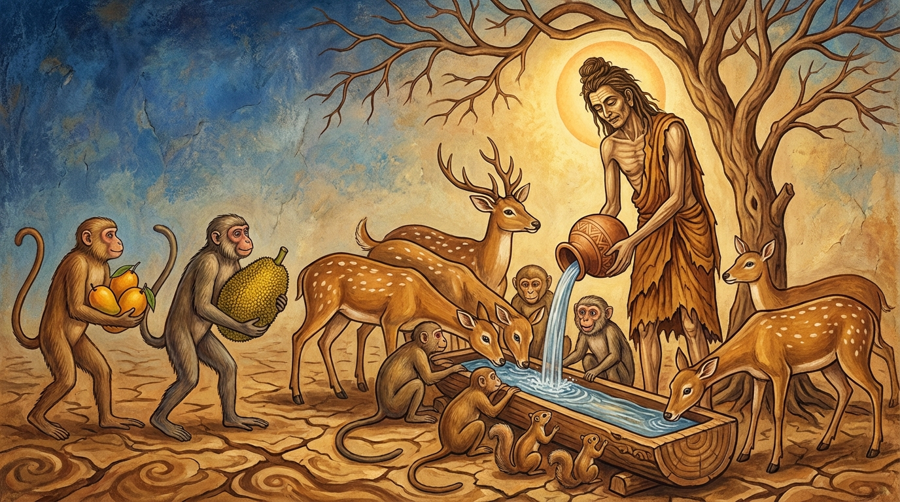

4. අම්බ ජාතකය (124)
“වායමෙථෙව පුරිසො” යනාදී වශයෙන් එන මෙම ධර්ම දේශනාව ශාස්තෘන් වහන්සේ ජේතවනාරාමයේ වැඩ වසන සමයෙහි වත්පිළිවෙත්
සම්පූර්ණ කරන එක් භික්ෂූන් වහන්සේ නමක් අරබයා දේශනා කරන ලදී. උන් වහන්සේ සැවැත් නුවර වැසි කුල පුත්රයෙක් ව සිට
ශාසනයෙහි පැවිදි ව වත්පිළිවෙත් මනාව සම්පූර්ණ කරන්නෙක් විය.
උන් වහන්සේ පහත සඳහන් වත්පිළිවෙත් මනාව ඉටු කළහ:
- ආචාර්ය උපාධ්යාය වත්,
- පැන් සහ පරිභෝජන ජලය පිළිබඳ වත්,
- පොහොය ගෙවල් සහ ගිනිහල් ගෙවල් (ජන්තාඝර) සම්බන්ධ වත්,
- දහහතරක් වූ මහා වත්,
- අසූවක් වූ ඛන්ධක වත්.
උන් වහන්සේ විහාරය අමදියි. පිරිවෙන, සක්මන් මළුව සහ විහාර මාර්ගය අමදියි. මිනිසුන්ට පැන් දෙයි. උන් වහන්සේගේ
වත්පිළිවෙත් සම්පත්තිය කෙරෙහි පැහැදුණු මිනිස්සු පන්සියයක් පමණ නිත්ය දාන පිරිනැමූහ. මහත් ලාභ සත්කාර උපන්නේය.
උන් වහන්සේ නිසා බොහෝ දෙනාට පහසු විහරණය ඇති විය.
ඉක්බිති දිනක් දම්සභා මණ්ඩපයෙහි භික්ෂූන් වහන්සේලා කථාවක්
ඇති කර ගත්හ: “ඇවැත්නි, අසවල් භික්ෂුව තමන්ගේ වත්පිළිවෙත් සම්පත්තිය නිසා මහත් ලාභ සත්කාර උපදවා ගත්තේය. මේ එකම
පුද්ගලයා නිසා බොහෝ දෙනාට පහසුවෙන් වාසය කිරීමට හැකි විය” යනුවෙනි. ශාස්තෘන් වහන්සේ එහි වැඩම කොට, “මහණෙනි, කවර
කථාවකින් යුක්ත ව මේ වේලාවෙහි රැස්ව සිටියහු දැ?” යි විමසා, “මේ කථාවෙනි” යි පැවසූ කල්හි; “මහණෙනි, මොහු දැන්
පමණක් නොව පෙරත් වත්පිළිවෙත් සම්පූර්ණ කළ කෙනෙකි. පෙරත් මොහු එක් අයෙකු නිසා පන්සියයක් තාපසවරුන් පලාඵල සොයා
වනයට නොගොස් මොහු විසින් ගෙනෙන ලද පලාඵලවලින්ම යැපුණාහ” යි වදාරා අතීත කථාව ගෙනහැර දැක්වූ සේක.
අතීතයෙහි බරණැස් නුවර බ්රහ්මදත්ත රජු රාජ්යය කරන සමයෙහි බෝධිසත්ත්වයන් වහන්සේ උසස් බමුණු කුලයක ඉපදී, වියපත් වූ පසු ඍෂි ප්රව්රජ්යාවෙන් පැවිදි ව පන්සියයක් තාපස පිරිස පිරිවරා පර්වත පාමුලක වාසය කළහ. එකල හිමාලය වනයෙහි දරුණු නියඟයක් ඇති විය. තැනින් තැන දිය සිඳී ගියේය. තිරිසන් සත්තු පැන් නොලැබ ක්ලාන්ත වූහ. ඉක්බිති ඒ තාපසයන් අතරින් එක් තාපසයෙක් ඔවුන්ගේ පිපාස දුක දැක, ගසක් කපා ඔරුවක් තනා, පැන් ඉස ඔරුව පුරවා ඔවුන්ට පැන් දුන්නේය. බොහෝ සතුන් රැස්ව පැන් බොන කල්හි තාපසයාට පලාඵල පිණිස යන්නට අවස්ථාවක් නොලැබුණි. හෙතෙම නිරාහාරව ම පැන් දෙයි. මෘග සමූහයා මෙසේ සිතූහ: “මේ තැනැත්තා අපට පැන් දෙමින් පලාඵල පිණිස යන්නට අවස්ථාවක් නොලබයි; ආහාර නොමැති කමින් ඉතා වෙහෙසට පත් වෙයි. එබැවින් අපි කතිකාවක් කර ගනිමු.” ඔවුහු මෙසේ කතිකා කර ගත්හ: “මෙතැන් පටන් පැන් බීම පිණිස එන අය විසින් තම තමන්ගේ ශක්ති ප්රමාණයෙන් පලාඵල රැගෙන ම පැමිණිය යුතුය.” එතැන් පටන් එක එකා බැගින් වූ තිරිසන් සත්තු තම තමන්ගේ බලයට ගැළපෙන පරිදි ඉතා මිහිරි අඹ, දම්, කොස් ආදිය රැගෙන ම පැමිණෙති. එක් අයෙකු සඳහා ගෙන එන ලද පලාඵල ප්රමාණය කරත්ත එකහමාරක බරට සමාන විය. පන්සියයක් තාපසවරු ඒවා ම අනුභව කරති. ඉතිරිය ඉවත දැමූහ.

බෝධිසත්ත්වයන් වහන්සේ එය දැක, “වත්පිළිවෙත් සම්පූර්ණ කරන එක් අයෙකු නිසා මෙපමණ තාපසයන්ට පලාඵල සඳහා වනයට නොගොස් යැපීම ඇති විය. එබැවින් වීර්යය නම් කළ යුතු ම ය” යි පවසා මෙම ගාථාව වදාළහ:
“නුවණැති පුරුෂයා වෑයම් කළ යුතු ම ය. පණ්ඩිත තෙමේ නොකළකිරිය යුතු ය. වෑයම් කිරීමේ ඵලය බලව. (මේ තාපසයන් විසින්) අනුභව කරන ලද්දා වූ අඹ (ආදී ඵලයන්) අනුන්ගෙන් අසා දැනගත්තක් නොව (ප්රත්යක්ෂ වූවකි).”
මෙහි සංක්ෂිප්ත අර්ථය මෙයයි: පණ්ඩිත තැනැත්තා තමන්ගේ වත්පිළිවෙත් පිරීම් ආදී කටයුතුවලදී උත්සාහ කළ යුතුමය, වීර්යය අත් නොහැරිය යුතුය. ඒ මක්නිසාද යත්? උත්සාහයේ නිශ්ඵල බවක් නොමැති හෙයිනි. මෙසේ මහාසත්ත්වයන් වහන්සේ “වීර්යය නම් සඵල වන්නක්ම ය” යි ඍෂි සමූහයා අමතා, “වායාමස්ස ඵලං පස්ස” (උත්සාහයේ ඵලය බලව) යි වදාළහ. කෙබඳු ඵලයක් ද? “භුත්තා අම්බා අනීතිහං” යනුයි. මෙහි ‘අම්බා’ (අඹ) යනු දේශනා මාත්රයකි; ඔවුන් විසින් නානාප්රකාර පලාඵල ගෙන එන ලදී. ඒ අතරින් වඩාත් සම්පන්න වූ හෝ බහුල වූ පලතුරු වශයෙන් ‘අඹ’ යැයි කියන ලදී. මේ පන්සියයක් තාපසයන් වනයට නොගොස් තමන් උදෙසා ගෙනෙන ලද අඹ යම් සේ අනුභව කළාහු ද, මේ උත්සාහයේ ඵලයයි. එය වනාහි “අනීතිහං” වේ. එනම් ‘මෙසේ කීවාලු, මෙසේ කීවාලු’ යයි ජනශ්රැතියෙන්/පරම්පරා කථාවෙන් (ඉතිහිතිහයෙන්) ගත යුතු දෙයක් නොව, ප්රත්යක්ෂයෙන්ම ඒ ඵලය බලව, යනුවෙනි. මෙසේ මහාසත්ත්වයන් වහන්සේ ඍෂි සමූහයාට අවවාද දුන්හ.
ශාස්තෘන් වහන්සේ මේ ධර්ම දේශනාව ගෙනහැර දක්වා ජාතකය පූර්වාපර සන්ධි ගළපා නිමවා වදාළහ. “එකල වත්පිළිවෙත් සම්පූර්ණ කළ තාපසයා නම් දැන් මේ භික්ෂුව ය. ගණශාස්තෘ වූයේ මම ම වෙමි” යි වදාළ සේක.
සිව්වන වූ අම්බ ජාතක වර්ණනාව නිමි.